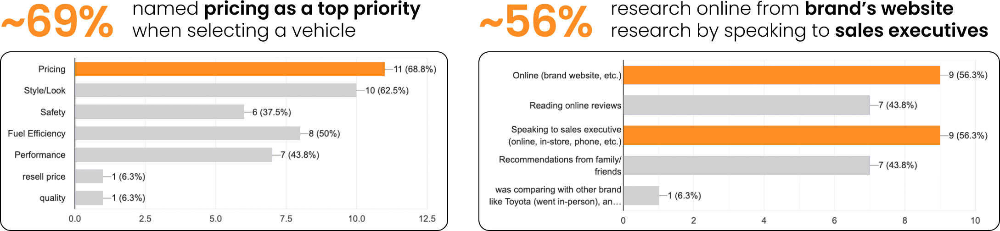

Raymond Co
Christy Fang
Min KangAngela Lee
UX/UI Design
UX Research
Figma
Google Forms
5 weeks
(Feb - Mar 2024)
In this senior-level experience design course, teams were tasked with solving a problem for a client through experience design, in which our team chose Kia.
My main roles were conducting user research, scripting user scenarios, prototyping the dealership inventory page, and organizing our weekly slide deck presentations to effectively communicate our designs.
Kia is South Korea's oldest automotive manufacturer with over 75 years of history and has grown to become the world's 5th largest vehicle manufacturer. Known for offering vehicles with abundant features and technology at competitive pricing, Kia cars are attractive options for budget-conscious consumers.
Despite ranking highest among mass market brands in vehicle dependency, Kia ranked last in customer satisfaction at dealerships, indicating a significant opportunity for improvement through experience design.
Before getting into the details of the design process, these are user scenarios the team made to walkthrough our prototype and explain our intervention. My role was scriptwriting.
In order to better understand the factors leading Kia to low customer satisfaction despite ranking high in vehicle dependency, we conducted secondary research and sent out surveys, leading to these key insights:
While “dealership visits decrease as buyers become more satisfied with digital retailing,” there is still a large proportion of buyers who visit in-person, as “85% of buyers say they visited a dealership during the purchase process.” (J.D. Power, 2022)
“Of those who bought a car from a dealership in the last 2 years, 55% felt they lacked necessary information, while only 45% felt fully informed for confident decision-making.” (Ipsos, 2022)
“A lack of trust in dealers and dealerships appears to be a driving cause of the difficult car-buying experience, as 83% either do not trust, or only somewhat trust the sales person.” (Ipsos, 2022)
We received 16 responses from 7 Kia car owners, 4 car owners of other mass market brands, and 5 people looking to purchase a car in the next 2 years.
I conducted a competitive analysis across competitor websites that ranked high in both vehicle dependency and customer satisfaction. The main takeaways were that competitors had features to encourage informed decision making like inventory search, model comparison, and pricing transparency compared to Kia's website.
How might we facilitate a seamless transition between the online and in-person purchasing experience to reduce information discrepancies and enable informed decisions for Kia buyers?
The team made a list of pages and features we would need and individually sketched wireframes before collaboratively sorting and selecting appropriate elements across all the ideas to move forward with. Highlighted in red are my sketches:
After selecting ideas, we decided on the user flow and rapidly prototyped a mockup of our proposed changes on Figma for user testing. I tested with one participant who looking to purchase a new car.
Post-test survey question example: Would screen A or B make you feel more equipt to make an informed decision towards purchasing your vehicle?
Three main insights were gathered from user testing to validate effective areas of our prototype and inform improvements for future iterations:
1) Users thought our prototype provided better informed decision making compared to Kias existing website.
2) Users liked the direct comparison features between vehicle builds and dealership offers in the new prototype (but stakeholders have concerns around how this will affect dealerships.)
3) There were inconsistencies in Kia's design system regarding button styling which led to confusion and slowed the purchasing process for users.
The team tested and reiterated two more times, taking in feedback from users, conducting more research when appropriate, and bringing the design intervention closer towards meeting user needs.
The result...
We improved the original customizing build page by improving the visibility of essential information in the decision making process, such as pricing options, providing feature explanations, and more visual information to improve efficiency of informed decision making for customers.
A new feature allowing customers to compare two vehicle builds directly without opening multiple tabs, with a side by side price comparison of features to support more informed decision making.
The existing website only shows if similar vehicles are in stock. Therefore, we added a dedicated dealership offer page for direct comparison of inventory prices across Canadian dealerships, aligning Kia with top competitors like Buick, Chevrolet, and Mitsubishi, known for strong vehicle dependency and customer satisfaction rankings.
Kia's current user profile is limited to the post-purchasing experience so we integrated the pre-purchasing process to help bridge the online to in-person experience.
To further bridge the online to in-person experience, we added the ability to pre-fill required documents such as proof of insurance online, which are normally done in person, to reduce wait times in person and expedite the purchasing process.
We adapted the Activix interface used by Kia employees to include access to customers' user profile information, to facilitate smoother interactions between employees and customers in the dealership.
Our team, initially unfamiliar with the automotive industry, conducted thorough research to understand our customer group. This lack of domain knowledge actually turned out to be an advantage, as it prevented us from making assumptions about our users and encouraged a more empathetic approach to design.
When presenting our designs, a recurring concern emerged regarding dealership employees' potential reception of our price comparison feature. As the feature's proposer, I addressed this by providing evidence that it only centralized existing information, demonstrating its necessity to position Kia competitively.